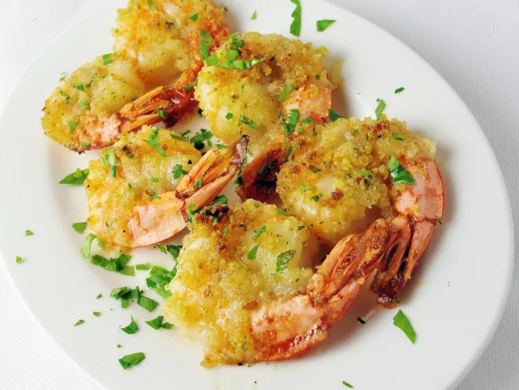

This baked shrimp scampi gets it done with cayenne pepper...and Italian bread crumbs. "We like it spicy and garlicky," says WannaBACook. "But you can vary the amounts of cayenne and garlic to suit your taste."
1 pound large shrimp, peeled and deveined
1 cup unsalted butter
¼ cup white wine
2 tablespoons lemon juice
2 tablespoons dried parsley
1 teaspoon cayenne pepper
2 tablespoons minced garlic
½ cup Italian-seasoned bread crumbs